Mulher
Diversos episódios da 1ª temporada foram exibidos, originalmente, em uma ordem díspar à cronologia numérica da série. As datas com asterisco estão estimadas, e não são confirmadas.
| EPISÓDIO | EXIBIÇÃO | REPRISE | |||
|---|---|---|---|---|---|
| 1ª TEMPORADA - ANO 1 - 1998 | |||||
| 001 | 1x01 | 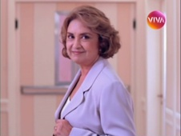 |
"Princípio de Tudo" de Alvaro Ramos e Euclydes Marinho direção Daniel Filho codireção Mário Márcio Bandarra e José Alvarenga Jr. elenco convidado Adriana Esteves, Renée de Vielmond, Natália Lage, Marcelo Serrado e Luisa Thiré |
01/04/1998 | 18/05/2010 |
| 002 | 1x02 | 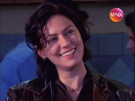 |
"Prazeres e Limites" de Alvaro Ramos direção Daniel Filho codireção Cininha de Paula elenco convidado Carla Marins, Paulo Goulart, Tuca Andrada, Imara Reis, Vanessa Loes, Helio Ary, Mary Daniel, Suzana Faini e Priscilla Rosembaum |
08/04/1998 | 19/05/2010 |
| 003 | 1x03 | 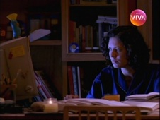 |
"O Fator Humano" de Doc Comparato direção Daniel Filho codireção José Alvarenga Jr. elenco convidado Arlete Salles, Marcos Frota, Marcello Antony e Erika Braga |
15/04/1998 | 20/05/2010 |
| 004 | 1x04 | 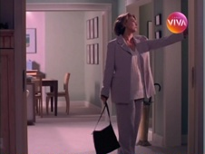 |
"Jogos Proibidos" de Alvaro Ramos, em argumento de Antônio Calmon direção Daniel Filho codireção José Alvarenga Jr. elenco convidado Flávio Galvão, Eliane Giardini, Taís Araújo, André Gonçalves, Virginia Nowick, Antônio Pompeu e Elisa Lucinda |
22/04/1998 | 21/05/2010 |
| 29/04/1998 sem exibição: Amistoso da Seleção Brasileira, Brasil x Argentina | |||||
| 005 | 1x05 | 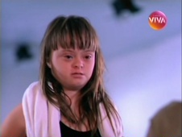 |
"Escolhas" de Maria Helena Nascimento direção José Alvarenga Jr. elenco convidado Malu Mader, Paulo Betti, Leonardo Brício, Alexandre Borges, Suely Franco, Castrinho e Neusa Borges e apresentando Paula Werneck |
06/05/1998* | 24/05/2010 |
| 006 | 1x06 | 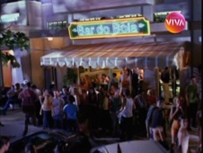 |
"Correndo Atrás" de Euclydes Marinho, em argumento de Antônio Calmon direção Daniel Filho codireção Mário Márcio Bandarra e José Alvarenga Jr. elenco convidado Patrícia França, José de Abreu, Pedro Vasconcelos, Cristina Mullins, Anselmo Vasconcellos, Maria Cristina Gatti e Breno Moroni |
17/06/1998 | 25/05/2010 |
| 24/06/1998 sem exibição: Leandro & Leonardo Especial | |||||
| 007 | 1x07 | 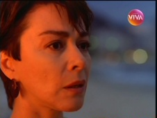 |
"Ninho Vazio" de Euclydes Marinho, em argumento de Flávia Lins direção José Alvarenga Jr. elenco convidado Nívea Maria, Dennis Carvalho, Isabela Garcia, Nicete Bruno, Taumaturgo Ferreira e Ivone Hoffman |
13/05/1998* | 26/05/2010 |
| 008 | 1x08 | 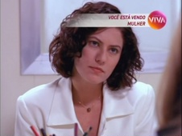 |
"Ética" de Maria Helena Nascimento direção Mário Márcio Bandarra e Cininha de Paula codireção César Rodrigues elenco convidado Mauro Mendonça, Luciana Braga, Paulinho Moska, Maria Mariana, Giuseppe Oristânio, Xuxa Lopes e Íris Bustamante |
27/05/1998 | 27/05/2010 |
| 009 | 1x09 | "Perdas e Danos" de Maria Helena Nascimento, em argumento de Lynn Mamet direção José Alvarenga Jr. codireção César Rodrigues elenco convidado Maitê Proença, Elizabeth Savalla, José Mayer, Cláudio Marzo, Ana Kutner, Maria Isabel de Lizandra e Miriam Freeland |
03/06/1998 | 28/05/2010 | |
| 010 | 1x10 | 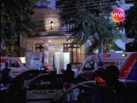 |
"Dia Quente" de Alvaro Ramos direção José Alvarenga Jr. codireção César Rodrigues elenco convidado Stênio Garcia, Pedro Paulo Rangel, Maurício Gonçalves, Stela Freitas, Lui Mendes, Maria Maya e Pedro Brício |
10/06/1998 | 31/05/2010 |
| 011 | 1x11 | 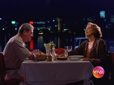 |
"A Fome e a Vontade de Comer" de Geraldo Carneiro direção Mário Márcio Bandarra e Cininha de Paula codireção César Rodrigues elenco convidado Osmar Prado, Tássia Camargo, Débora Evelyn e Davi Pinheiro |
20/05/1998* | 01/06/2010 |
| 012 | 1x12 | 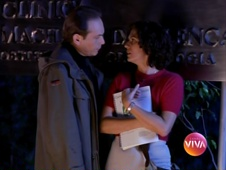 |
"Viciados em Amor" de Euclydes Marinho direção José Carlos Pieri e César Rodrigues elenco convidado José Wilker, Jackson Antunes, Tereza Seiblitz, Helena Ranaldi, Evandro Mesquita, Catarina Abdala e Irving São Paulo |
01/07/1998 | 02/06/2010 |
| 013 | 1x13 | 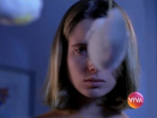 |
"Repulsa" de Maria Helena Nascimento direção José Carlos Pieri e César Rodrigues elenco convidado Letícia Spiller, Marcelo Novaes, Leandra Leal, Louise Cardoso, Tato Gabus Mendes e José Augusto Branco |
08/07/1998* | 03/06/2010 |
| 014 | 1x14 | 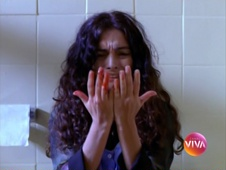 |
"Compulsão" de Álvaro Ramos direção Mário Márcio Bandarra e Cininha de Paula elenco convidado Denise Dumont, Claudia Ohana, Cecil Thiré, Tonico Pereira, José Maurício Machline, Izabella Bicalho, Maria Silvia, Zeca Xavier, Lucas Marguti e André Schaefer |
15/07/1998* | 04/06/2010 |
| 015 | 1x15 | "Néctar da Vida" de Doc Comparato direção José Carlos Pieri elenco convidado Denise Fraga, Júlia Lemertz, Heloísa Helena, Rui Rezende, Carlos Takeshi, Talita de Castro e Gabriel Braga Nunes |
22/07/1998 | 07/06/2010 | |
| 016 | 1x16 | 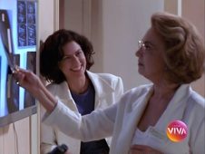 |
"Desejos Incontroláveis" de Euclydes Marinho direção Mário Márcio Bandarra, Cininha de Paula e César Rodrigues elenco convidado Paloma Duarte, Selton Mello, Beth Goulart, Eduardo Galvão, Amélia Bittencourt e Maria Gladys |
29/07/1998 | 08/06/2010 |
| 05/08/1998 reapresentação do episódio #005 | |||||
| 12/08/1998 sem exibição, Taça Libertadores da América | |||||
| 017 | 1x17 | 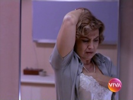 |
"Casa de Ferreiro" de Daniel Filho, Alvaro Ramos e Lynn Mamet direção Mário Márcio Bandarra, Cininha de Paula e Daniel Filho elenco convidado Cassia Kiss, Lupe Gigliotti, Thatiane Manzan, Claudia Rodrigues e Flávio Antônio |
19/08/1998 | 09/06/2010 |
| 26/08/1998 sem exibição, Taça Libertadores da América | |||||
| 018 | 1x18 | 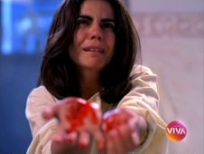 |
"A Hora da Verdade" de Alvaro Ramos e Lynn Mamet direção José Alvarenga Jr. elenco convidado Mayara Magri, Daniel Dantas, Eduardo Galvão, Fafy Siqueira, Ronaldo Tortelli, Marco Rodrigo, Daniel Barcelos, Cristina Amadeo |
02/09/1998 | 10/06/2010 |
| 019 | 1x19 | 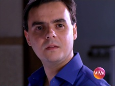 |
"Mães e Filhos" de Euclydes Marinho direção Mário Márcio Bandarra, Cininha de Paula e Daniel Filho elenco convidado Betty Gofman, Bel Kutner, Solange Couto, Regina Braga, Charle Myara e Ed Oliveira |
09/09/1998* | 11/06/2010 |
| 020 | 1x20 | 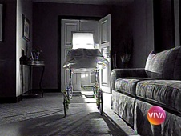 |
"Alucinações" de Alvaro Ramos supervisão de texto Daniel Filho direção Mário Márcio Bandarra e Cininha de Paula elenco convidado Eva Todor, Claudio Cavalcanti, Alexandra Marzo, Cinira Camargo, Alexandre Barilari, Cassia Linhares, Roberto Bomtempo, Thaís de Campos, Renato Rabelo e Aracy Cardoso |
16/09/1998* | 14/06/2010 |
| 021 | 1x21 | 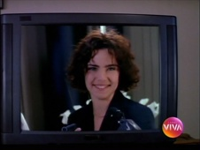 |
"Menino ou Menina" de Glória Perez supervisão de texto e direção geral Daniel Filho direção Mário Márcio Bandarra e Cininha de Paula elenco convidado Ana Paula Arósio, Rodrigo Santoro, Rosi Campos, Carlos Eduardo Dolabella, Betty Erthal, Flávio Colker e Cláudia Lira |
23/09/1998 | 15/06/2010 |
| 022 | 1x22 | 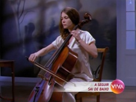 |
"Olhos Maternos" de Maria Helena Nascimento supervisão de texto e direção geral Daniel Filho direção José Alvarenga Jr. elenco convidado Claudia Abreu, Fernando Eiras, Claudia Rodrigues, Daniel Boaventura, Georgiana Góes, Priscila Assum, Silvio Pozatto e Fernando José |
30/09/1998* | 16/06/2010 |
| 023 | 1x23 | 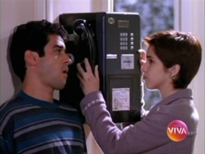 |
"Amor Secreto" de Alvaro Ramos, Graziella Moraes e Leandra Pires supervisão de texto e direção geral Daniel Filho direção José Carlos Pieri elenco convidado Ester Goes, Nicete Bruno, Cininha de Paula, Adriano Reys, Ângelo Paes Leme, Ingrid Guimarães, Henrique Farias, Mila Moreira, Ana Roberta Gualda, Marcelo Saback, Henri Pagnoncelli |
07/10/1998* | 17/06/2010 |
| 14/10/1998 sem exibição, Amistoso da Seleção Brasileira | |||||
| 024 | 1x24 | 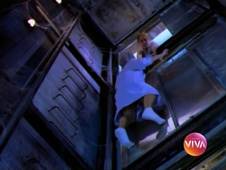 |
"De Braços Abertos" de Doc Comparato supervisão de texto e direção geral Daniel Filho direção José Carlos Pieri elenco convidado Christiane Torloni, Eloísa Mafalda, Nicete Bruno, Kátia Bronstein, Tony Tornado, Adriano Garib, Sílvio Ferrari, Jaime Leibovitch e Rodolfo Freitas |
21/10/1998* | 18/06/2010 |
| 28/10/1998 sem exibição, Campeonato Brasileiro | |||||
| 025 | 1x25 | 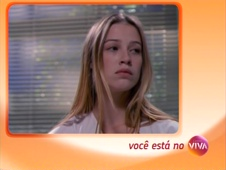 |
"A Profissional" de Maria Helena Nascimento colaboração Alvaro Ramos supervisão de texto e direção geral Daniel Filho direção Mário Márcio Bandarra e Cininha de Paula elenco convidado Luana Piovani, Renata Sorrah, Odilon Wagner, Caio Junqueira, Fábio Junqueira, Luís Melo, Ricardo Kosovski e George Sauma |
04/11/1998 | 21/06/2010 |
| 11/11/1998 reapresentação do episódio #001 | |||||
| 18/11/1998 sem exibição, Amistoso da Seleção Brasileira | |||||
| 25/11/1998 sem exibição, Campeonato Brasileiro | |||||
| 02/12/1998 reapresentação do episódio #017 | |||||
| 09/12/1998 sem exibição, Campeonato Brasileiro | |||||
| 026 | 1x26 | 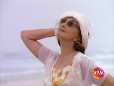 |
"A Decisão Final" de Alvaro Ramos colaboração no argumento Lynn Mamet supervisão de texto e direção geral Daniel Filho direção José Alvarenga Jr. elenco convidado Zezé Polessa, Antônio Calloni, Waldemar Berditchevsky e Alexandre Moreno |
16/12/1998 | 22/06/2010 |
| 2ª TEMPORADA - ANO 2 - 1999 | |||||
| 027 | 2x01 | 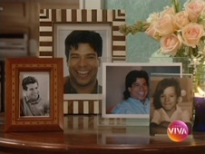 |
"A Cerimônia do Adeus" de Maria Adelaide Amaral direção José Alvarenga Jr. elenco convidado Marcos Paulo, Maria Luisa Mendonça, Ernesto Piccolo, Marya Bravo, Marina Hodecker, Rafael Pieri e Anna Wiltgen |
23/03/1999 | 23/06/2010 |
| 028 | 2x02 | 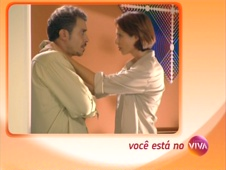 |
"A Volta ao Lar" de Maria Adelaide Amaral direção José Alvarenga Jr. elenco convidado Danielle Winits, Paulo Gorgulho, Silvia Pfeifer, Ernesto Piccolo e Michelle Dias Lacerda |
30/03/1999 | 24/06/2010 |
| 029 | 2x03 | 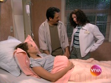 |
"Vida Contra a Morte" de Geraldo Carneiro direção Mário Márcio Bandarra elenco convidado Giulia Gam, Luís Melo, Ernani Moraes e Clarice Niskier |
06/04/1999 | 25/06/2010 |
| 030 | 2x04 | 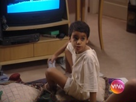 |
"Vícios e Virtudes" de Doc Comparato direção Mário Márcio Bandarra elenco convidado Vera Holtz, Claudio Cavalcanti, Fernanda Rodrigues, Java Mayam, Márcio Garcia, Lupe Gigliotti e Luiz Guilherme |
13/04/1999 | 28/06/2010 |
| 031 | 2x05 | 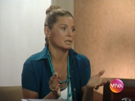 |
"Antes do Tempo" de Alvaro Ramos direção José Alvarenga Jr. elenco convidado Vera Fischer, Jorge Dória, Isabel Fillardis, Larissa Barbosa, Rodrigo dos Santos, Romeu Evaristo, Marcelina Cartaxo e Juliana Guimarães |
20/04/1999 | 29/06/2010 |
| 032 | 2x06 | 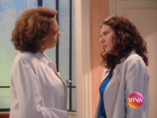 |
"O Estranho" de Antonio Calmon e Flávia Lins e Silva direção José Alvarenga Jr. elenco convidado Carlos Vereza, Sandra Barsotti, Cristina Prochaska, Rodrigo Penna Santos e Renata Castro Barbosa |
27/04/1999 | 30/06/2010 |
| 033 | 2x07 | "Dormindo Com o Inimigo" de Maria Adelaide Amaral direção Cininha de Paula elenco convidado Walmor Chagas, Claudia Ohana, José de Abreu, Maria Ribeiro, Claudio Lins, Andrea Avancini, Renato Rabelo, Karina Mello e Rachel Mayer |
04/05/1999 | 01/07/2010 | |
| 034 | 2x08 | 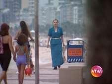 |
"Concerto Para Piano" de Alvaro Ramos direção Cininha de Paula elenco convidado Beatriz Segall, Sergio Brito, Marcos Winter, Ana Beatriz Nogueira, Bianca Byington, Tadeu Aguiar, Isabel Fillardis e Rodrigo Dos Santos |
11/05/1999 | 02/07/2010 |
| 18/05/1999 sem exibição, O Pagador de Promessas | |||||
| 035 | 2x09 | 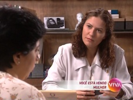 |
"O Prazer" de Antonio Calmon e Flávia Lins e Silva direção Mário Márcio Bandarra elenco convidado Ana Paula Tabalipa, Danton Mello, Claudio Heinrich, Milton Gonçalves, Cristina Mutarelli, Alessandra Aguiar, Maria Maya, Bruno Moraes, Daniele Valente e Polyana Ginard |
25/05/1999 | 05/07/2010 |
| 036 | 2x10 | 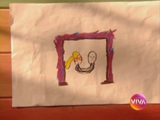 |
"Perfume do Amor" de Doc Comparato direção José Carlos Pieri elenco convidado Deborah Evelyn, Carla Marins, Camila Amado, Carlos Gregório, Luisa Thiré e Stephani Neves |
01/06/1999 | 06/07/2010 |
| 037 | 2x11 | 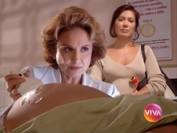 |
"Mãe Menina" de Maria Adelaide Amaral direção José Carlos Pieri elenco convidado Raul Cortez, Lilia Cabral, Flávio Galvão, Cissa Guimarães, Fábio Junqueira, Dirce Migliaccio, Mário Gomes, Camila Caputti, Bruno Gagliasso, Katy Lyra, Janaína Dinis Guerra, Jorge Neves e Sérgio Hondjakoff |
08/06/1999 | 07/07/2010 |
| 038 | 2x12 | 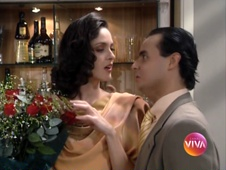 |
"As Três Marias" de Geraldo Carneiro direção Mário Márcio Bandarra elenco convidado Raul Cortez, Walderez de Barros, José Dumont, Bianca Byington, Cristina Pereira, Giuseppe Oristanio, Marcelo Mansfield, Kate Lira, Mariane Vincentini e Kika Freire |
15/06/1999 | 08/07/2010 |
| 039 | 2x13 | 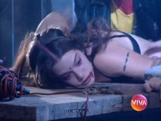 |
"Família" - parte 1 de Antonio Calmon, Flávia Lins e Silva e Rosane Lima direção José Alvarenga Jr. elenco convidado Natália do Vale, Natália Lage, Gianfrancesco Guarnierei, Pedro Brício, Flávia Alessandra, Cléa Simões, Dartangnan Junior, Lúcio Mauro Filho, Carlos Roberto Mendes, Thiarê, Rafael Salado e Dudu Azevedo |
22/06/1999 | 09/07/2010 |
| 040 | 2x14 | 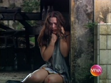 |
"Pai de Família" - parte 2 de Antonio Calmon, Flávia Lins e Silva e Rosane Lima direção José Alvarenga Jr. elenco convidado Natália do Vale, Natália Lage, Gianfrancesco Guarnierei, Pedro Brício, Flávia Alessandra, Cléa Simões, Dartangnan Junior, Lúcio Mauro Filho, Carlos Roberto Mendes, Thiarê, Rafael Salado e Dudu Azevedo |
29/06/1999 | 12/07/2010 |
| 041 | 2x15 | 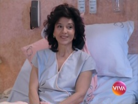 |
"A Coisa Certa" de Adriana Falcão direção Cininha de Paula elenco convidado Joana Fomm, Yoná Magalhães, Mariana Lima, Licurgo Spinola e José Augusto Branco Exibido excepcionalmente em uma quarta-feira, em virtude da Copa América. |
07/07/1999 | 13/07/2010 |
| 042 | 2x16 | 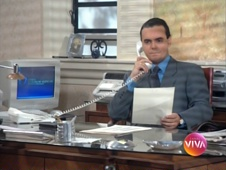 |
"A Vida Continua" de Maria Adelaide Amaral direção José Carlos Pieri elenco convidado Beth Goulart, Antonio Petrin, Tuca Andrada, Petronio Gontijo, Flávia Aloy e Yeda Alvim |
13/07/1999 | 14/07/2010 |
| 043 | 2x17 | 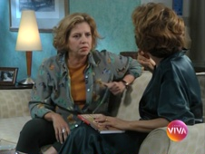 |
"Recomeçar" de Alvaro Ramos direção José Carlos Pieri elenco convidado Leandra Leal, Thiago Lacerda, Isabel Fillardis, Othon Bastos, Hélio Ary, Rodrigo Dos Santos e Mary Sheila |
20/07/1999 | 15/07/2010 |
| 044 | 2x18 | 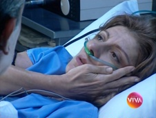 |
"Lindo Maravilhoso" de Doc Comparato direção Cininha de Paula elenco convidado Marília Pêra, Paulo José, Vera Holtz, Fábio Sabag, Claudia Netto, Stella Rodrigues, Hilda Rebello e Jaime Leibovitch |
27/07/1999 | 16/07/2010 |
| 045 | 2x19 | 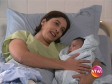 |
"Mãe de Aluguel" de Maria Adelaide Amaral direção Mário Márcio Bandarra elenco convidado Zezé Polessa, Jonas Bloch, Anna Cotrim, Caco Monteiro e Ligia Agueda |
03/08/1999 | 19/07/2010 |
| 046 | 2x20 | 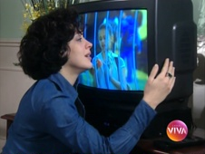 |
"Maternidade" - parte 1 de Antonio Calmon, Geraldo Carneiro, Flávia Lins e Silva e Rosane Lima direção Cininha de Paula elenco convidado Claudia Raia, Leonardo Villar, Drica Moraes, Marcos Frota, Suely Franco, Zilka Salaberry, Felipe Wagner, Fernanda Migotto, Gabriel Mergulhão, Camila Sampaio, Marco Rodrigo e Adriana Tolentino |
10/08/1999 | 20/07/2010 |
| 047 | 2x21 | 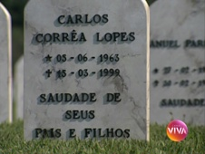 |
"Mães de Família" - parte 2 de Antonio Calmon, Flávia Lins e Silva e Rosane Lima direção Cininha de Paula elenco convidado Claudia Raia, Leonardo Villar, Drica Moraes, Marcos Frota, Suely Franco, Zilka Salaberry, Felipe Wagner, Fernanda Migotto, Gabriel Mergulhão e Camila Sampaio |
17/08/1999 | 21/07/2010 |
| 048 | 2x22 | 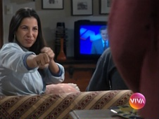 |
"Reencontro" de Antonio Calmon, Flávia Lins e Silva, Alvaro Ramos e Rosane Lima direção Mário Márcio Bandarra elenco convidado Francisco Cuoco, Arlete Sales, Luiza Thomé, John Herbert, Henri Pagnoncelli, Clemente Viscaíno e George Sauma |
24/08/1999 | 22/07/2010 |
| 049 | 2x23 | 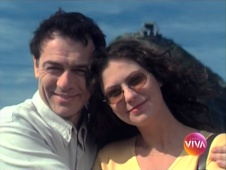 |
"Bolero" de Alvaro Ramos direção Mário Márcio Bandarra elenco convidado Mauro Mendonça, Tetê Medina, Toni Lestinge, Mário Lago, Valéria Alencar, Marília Medina, Andrea Dantas, Ivan Martins e Roberto Frota |
31/08/1999 | 23/07/2010 |
| 050 | 2x24 | 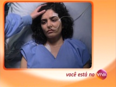 |
"A Bela Adormecida" de Doc Comparato direção José Carlos Pieri elenco convidado Letícia Sabatella, Norton Nascimento, Vera Holtz, Gabriela Alves, Mayara Magri, Luiz Guilherme e Adriano Garib |
07/09/1999 | 26/07/2010 |
| 051 | 2x25 | 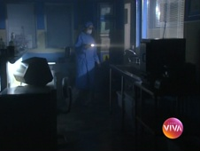 |
"Sabotagem" de Doc Comparato direção José Alvarenga Jr. elenco convidado Vera Holtz, Luiz Felipe Badin, Paulo César Grande, Maria Helena Dias e Arietha Corrêa |
14/09/1999 | 27/07/2010 |
| 052 | 2x26 | 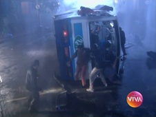 |
"O Acidente" de Jorge Duran direção José Alvarenga Jr. elenco convidado Emiliano Queiroz, Beatriz Lyra, Georgiana Goes, Aramis Trindade, Eliane Costa, Aldri d'Anunciação, Ricardo Scarpin, Rubem de Bem, Alexandre Faissol, Zaru, F. Xhackal, Aori e Tamara Barreto |
21/09/1999 | 28/07/2010 |
| 053 | 2x27 | 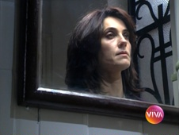 |
"De Anjos e Demônios" de Geraldo Carneiro direção José Carlos Pieri elenco convidado Christiane Torloni, Patrícia Travassos, Helena Fernandes, Bruno Garcia, Marcos Oliveira, João Signorelli e Gino Santos |
28/09/1999 | 29/07/2010 |
| 054 | 2x28 | "Primeiro Amor" de Adriana Falcão direção Mário Márcio Bandarra elenco convidado Matheus Nachtergaele, Laura Cardoso, Thiago Oliveira, Anna Wiltgen, Marina Hodecker, Norma Geraldy e Rafael Pieri |
05/10/1999 | 30/07/2010 | |
| 12/10/1999 sem exibição, Morte e Vida Severina | |||||
| 055 | 2x29 | "Pais Solteiros" de Ana Maria Moretzsohn direção Cininha de Paula elenco convidado Victor Fasano, Fernando Eiras, Cássia Linhares, Daniela Escobar, Marina Hodecker, Rafael Pieri, Lis Estrela e George Sauma |
19/10/1999 | 02/08/2010 | |
| 056 | 2x30 | "Forças Ocultas" de Alvaro Ramos direção Cininha de Paula elenco convidado Tony Ramos, Cristiana Oliveira, Betty Lago, Nizo Neto, Wilson Cardoso e Ricardo Marecos |
26/10/1999 | 03/08/2010 | |
| 057 | 2x31 | "Herança de Família" de Ana Maria Moretzsohn direção Mário Márcio Bandarra elenco convidado Maria Padilha, Edney Giovenazzi, Betty Gofman, Cassiano Ricardo, Ludmila Dayer, Pablo Uranga e Mariana Mattos |
02/11/1999 | 04/08/2010 | |
| 058 | 2x32 | "O Segredo" de Jorge Duran direção Mário Márcio Bandarra elenco convidado Cássia Kiss, Gracindo Junior, Caio Junqueira, João Carlos Barroso, Dedina Bernadelli, Ludmila Rosa e Debora Bapt |
09/11/1999 | 05/08/2010 | |
| 059 | 2x33 | "Lugar ao Sol" de Doc Comparato direção Cininha de Paula elenco convidado Susana Werner, Nuno Leal Maia, Jacqueline Laurence, Elizabeth Savalla, Stepan Necerssian, Luciana Brites, Suzana Pires e Garcia Junior convidada Mause Ramalho |
16/11/1999 | 06/08/2010 | |
| 060 | 2x34 | "A Primeira Vez" de Antonio Calmon, Alvaro Ramos, Flávia Lins e Silva e Rosane Lima direção Ricardo Favilla elenco convidado Claudia Lira, Debora Falabella, Rodrigo Drippê, Anna Wiltgen, Murilo Rosa, Hugo Gross, Vera Almeida, Viviane Victorette e Milena Pogrebinschi |
23/11/1999 | 09/08/2010 | |
| 061 | 2x35 | "Grávidas" - parte 1, de Alvaro Ramos direção Daniel Filho, Cininha de Paula, Mário Márcio Bandarra, José Carlos Pieri, Ricardo Favilla e José Alvarenga Jr. elenco convidado Carolina Ferraz, José Wilker, Murilo Benício, Carolina Dieckmann, Claudia Lira, Oswaldo Loureiro, Nicette Bruno, Debora Falabella, Arthur Scheinert e Rodrigo Drippê |
30/11/1999 | 10/08/2010 | |
| 062 | 2x36 | "Mãe" - parte 2 de Antonio Calmon direção Daniel Filho, Cininha de Paula, Mário Márcio Bandarra, José Carlos Pieri, Ricardo Favilla e José Alvarenga Jr. elenco convidado Carolina Ferraz, Vera Holtz, Claudia Lira, Nicette Bruno, Debora Falabella, Rodrigo Drippê e Ney Latorraca |
07/12/1999 | 11/08/2010 | |